양자 회로를 읽는 물리학
단일 큐비트 회전에서 상호작용과 답의 확률까지
내용 살펴보기
양자 회로를 그리다 보면 작은 상자들이 줄지어 놓인다. 한 큐비트를 돌리는 회전 게이트, 두 큐비트를 잇는 CNOT, 다시 회전 게이트. 코드는 몇 줄이면 실행되고 결과도 나온다. 그런데 이 순서로 상자를 놓은 이유를 설명하려 하면 손이 멈춘다. 무엇이 회전했고, 두 큐비트 사이에 어떤 관계가 생겼으며, 그 변화는 풀려는 문제의 어디에 해당할까.
Daniel Buchta가 공유한 짧은 유도식은 이 질문을 열기에 좋은 장면이다. CNOT 두 개 사이에 한 큐비트의 Z축 회전을 넣으면, 전체가 두 큐비트의 ZZ 상호작용을 구현한다. 게시물은 이 항등식을 해밀토니안 시뮬레이션과 변분 양자 알고리즘으로 연결한다. [1] 한 큐비트의 위상을 바꾸는 조작이 두 큐비트의 결합이 되는 것이다.
물리학의 언어로 회로를 읽으면 그 이유를 따라갈 수 있다. 에너지 차이는 시간이 흐르며 위상차가 되고, 위상차는 다음 연산에서 진폭이 더해지고 상쇄되는 방식을 바꾼다. 마지막 측정에서는 그 차이가 결과의 확률로 나타난다. 이 연결을 두 큐비트의 가장 작은 문제에서 끝까지 계산해 보자.
회전은 상태의 어떤 차이를 만드는가
큐비트의 상태를 로 쓰자. 복소수  는 각 성분의 진폭이다. 0과 1을 구별하는 Z 기저에서 측정하면 확률은 각각
는 각 성분의 진폭이다. 0과 1을 구별하는 Z 기저에서 측정하면 확률은 각각  이며 합은 1이다. 복소수의 크기는 확률과 연결되고, 그 방향인 위상은 여러 진폭이 만날 때 어떻게 더해질지를 정한다.
이며 합은 1이다. 복소수의 크기는 확률과 연결되고, 그 방향인 위상은 여러 진폭이 만날 때 어떻게 더해질지를 정한다.
먼저 Hadamard 게이트
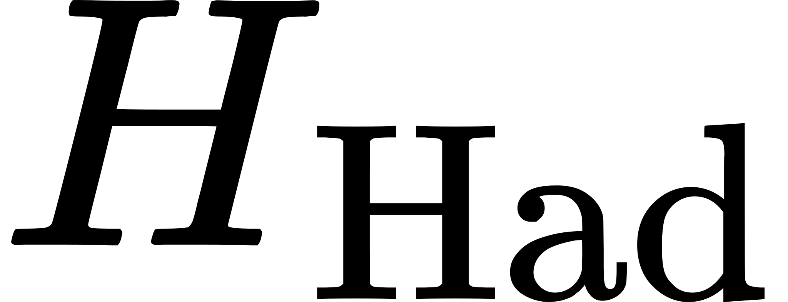
로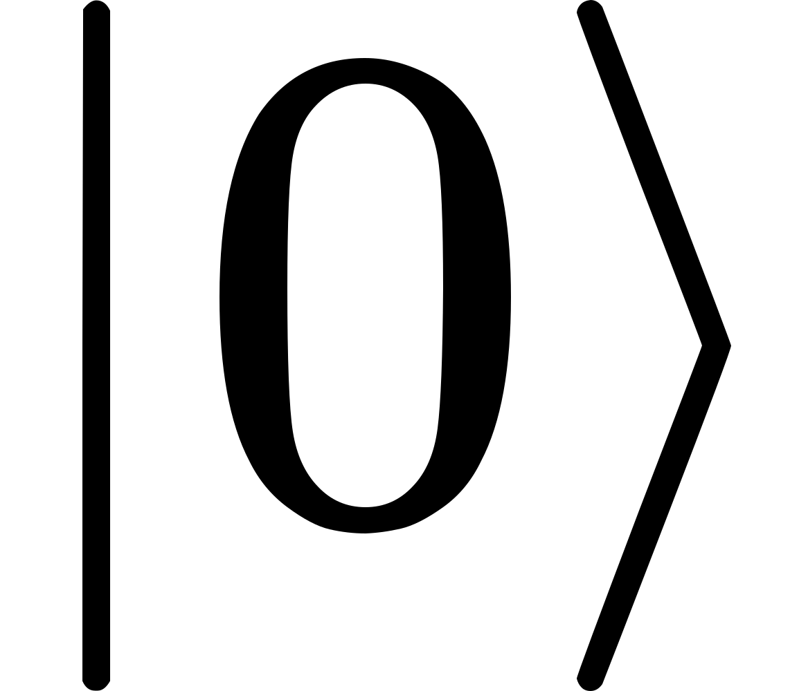
를 다음 상태로 만든다.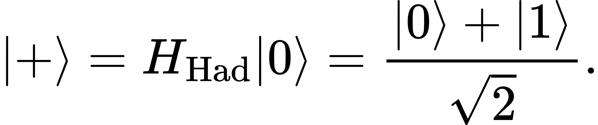
두 성분의 크기와 위상이 같고 측정 확률은 각각 1/2이다. 여기에 각도  의 Z축 회전을 적용하자. Z는 에 고유값 +1,
의 Z축 회전을 적용하자. Z는 에 고유값 +1,  에 −1을 주는 Pauli 연산자다. [2]
에 −1을 주는 Pauli 연산자다. [2]
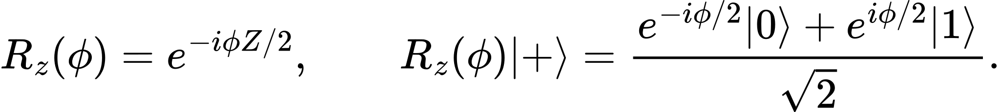
두 진폭의 크기는 여전히  다. Z 기저 측정 확률도 그대로다. 바뀐 것은 두 성분 사이의 상대위상 다. 상태 전체에 같은 위상 인자를 곱하면 모든 진폭이 함께 돌아가지만, 여기서는 두 성분의 방향이 서로 달라진다.
다. Z 기저 측정 확률도 그대로다. 바뀐 것은 두 성분 사이의 상대위상 다. 상태 전체에 같은 위상 인자를 곱하면 모든 진폭이 함께 돌아가지만, 여기서는 두 성분의 방향이 서로 달라진다.
이 차이를 읽으려면 두 성분이 다시 만나는 연산이 필요하다. Hadamard를 한 번 더 적용하면 0으로 향하는 진폭에는 두 성분의 합이, 1로 향하는 진폭에는 차이가 들어간다.

따라서
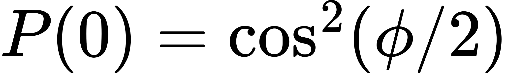
, 다.
다. 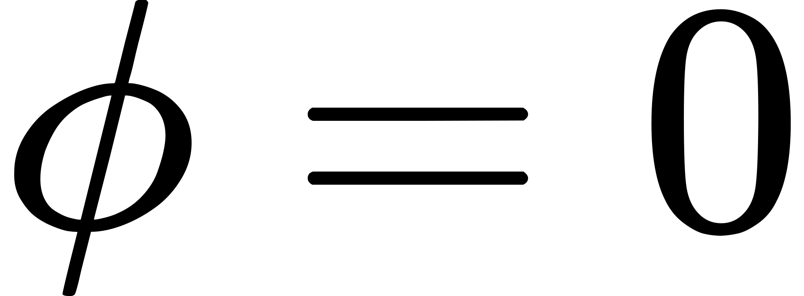
에서는 언제나 0, 에서는 언제나 1을 읽는다. 가운데 회전 직후까지 같았던 확률이 마지막 Hadamard를 거쳐 달라졌다. 간섭은 다음 결과로 향하는 진폭들이 위상에 따라 더해지거나 상쇄되는 과정이다.
에서는 언제나 1을 읽는다. 가운데 회전 직후까지 같았던 확률이 마지막 Hadamard를 거쳐 달라졌다. 간섭은 다음 결과로 향하는 진폭들이 위상에 따라 더해지거나 상쇄되는 과정이다.
그림 1에서는 화살표의 길이와 방향을 나누어 읽으면 좋다. Rz 뒤에는 길이가 같고 방향이 벌어진다. 마지막 Hadamard 뒤에는 그 방향 차이가 확률 막대의 높이 차이로 나타난다.
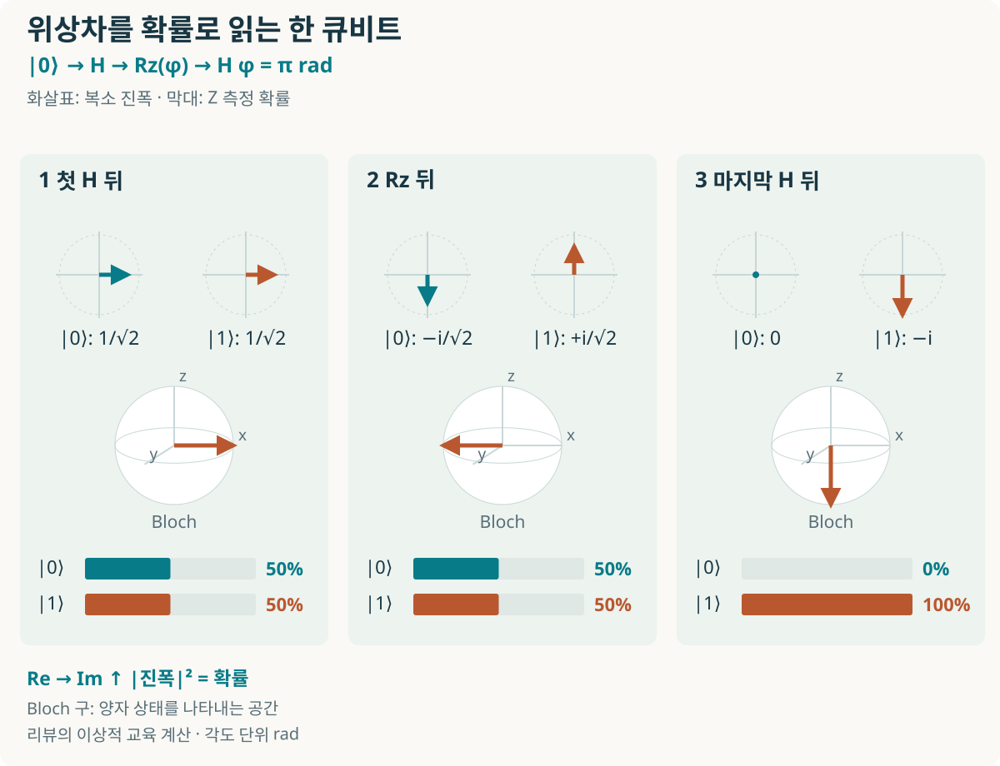
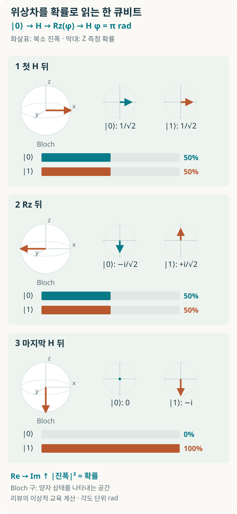
Bloch 구에서는 이 상태를 구 표면의 한 점으로 나타낸다. 북극과 남극이 이고, 두 성분의 상대위상이 적도 방향의 위치에 반영된다. Z축 회전은 그 위치를 축 둘레로 돌린다. 이것은 두 상태 성분의 관계를 나타내는 기하학이다. 실제 장치에서는 선택한 두 준위와 구동 방식이 이 상태 공간의 회전을 구현한다. 에서 시작하는 Y축 회전은
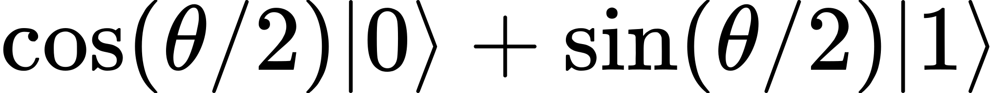
를 만들므로, 이번에는 Z 측정 확률도 회전각에 따라 바뀐다.두 값의 같고 다름에 위상을 준다
큐비트가 둘이면 상태 성분은
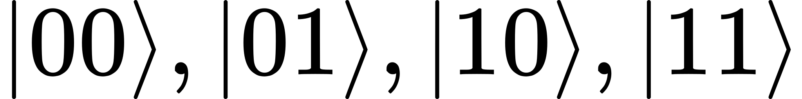
네 개다. 첫 자리를 , 둘째를
, 둘째를  로 쓰고, CNOT의 제어 큐비트를 a, 표적을 b로 정하자. CNOT은 a가 1인 성분에서 b를 뒤집는다. 비트로 쓰면
로 쓰고, CNOT의 제어 큐비트를 a, 표적을 b로 정하자. CNOT은 a가 1인 성분에서 b를 뒤집는다. 비트로 쓰면 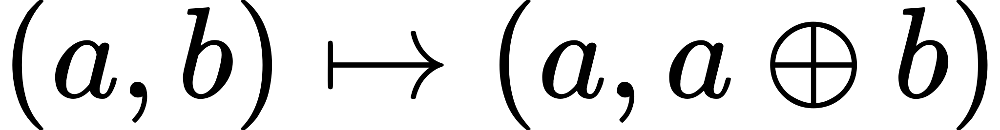
다. 기호 는 두 값이 다르면 1, 같으면 0인 배타적 논리합이다.
는 두 값이 다르면 1, 같으면 0인 배타적 논리합이다.
첫 CNOT 뒤의 b에는 두 비트의 패리티가 들어 있다. 00·11에서 b는 0이고, 01·10에서는 1이다. 이 b에
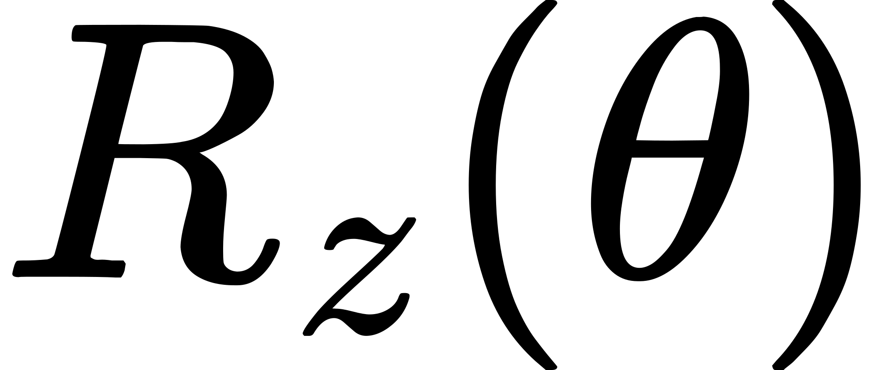
를 적용하면 같은 비트 쌍에는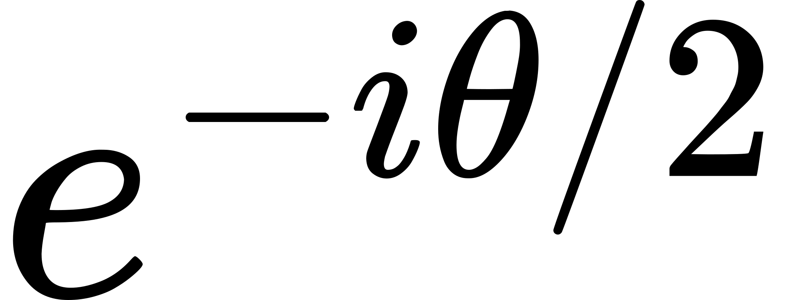
, 다른 비트 쌍에는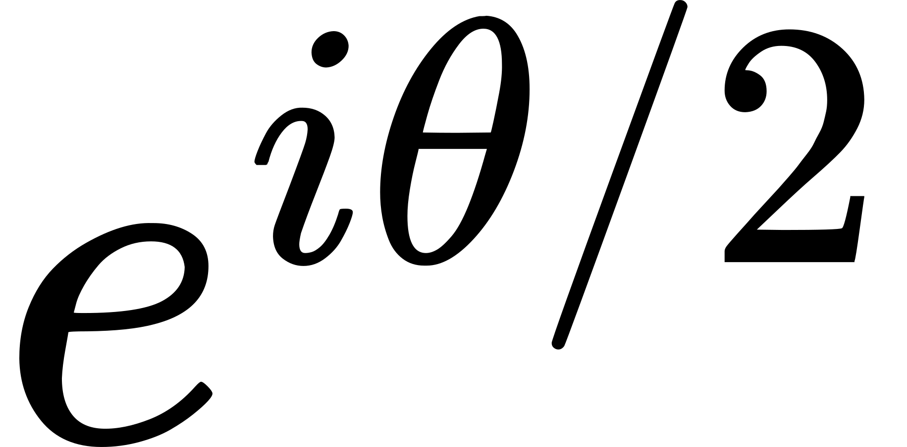
가 곱해진다. 마지막 CNOT은 바뀐 비트 배열을 처음대로 돌려놓는다. 그동안 부여한 위상은 각 성분에 남는다.| 처음 비트 | 첫 CNOT 뒤 | 회전에서 얻은 위상 인자 | 마지막 CNOT 뒤 |
|---|---|---|---|
| 00 | 00 | 00 | |
| 01 | 01 | 01 | |
| 10 | 11 | 10 | |
| 11 | 10 | 11 |
중첩 상태에서도 네 성분이 이 규칙을 함께 따른다. 패리티를 중간에 측정하는 단계는 없다. 이 합성의 효과는 ZZ 연산자의 고유값으로 간결하게 쓸 수 있다.  는
는 00·11에 +1, 01·10에 −1을 준다. 따라서 [3]
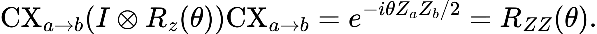
식의 오른쪽 연산자가 먼저 작용한다. 실제 회로에서는 첫 CNOT, b의 Rz, 마지막 CNOT 순서로 실행한다. 한 큐비트의 위상이 두 큐비트 값의 관계에 따라 달라지는 위상이 된 것이다. 이 합성에서 필요한 두 큐비트 연산 자원은 CNOT이 제공한다.
그림 2의 네 경로를 위에서 아래로 읽어 보면, 비트 배치를 되돌리는 일과 위상을 되돌리는 일이 서로 다르다는 것을 확인할 수 있다. 그 관계를 연산자로 압축하면  다. 켤레변환(conjugation)이 한 자리의 생성자를 두 자리의 생성자로 바꾼다.
다. 켤레변환(conjugation)이 한 자리의 생성자를 두 자리의 생성자로 바꾼다.
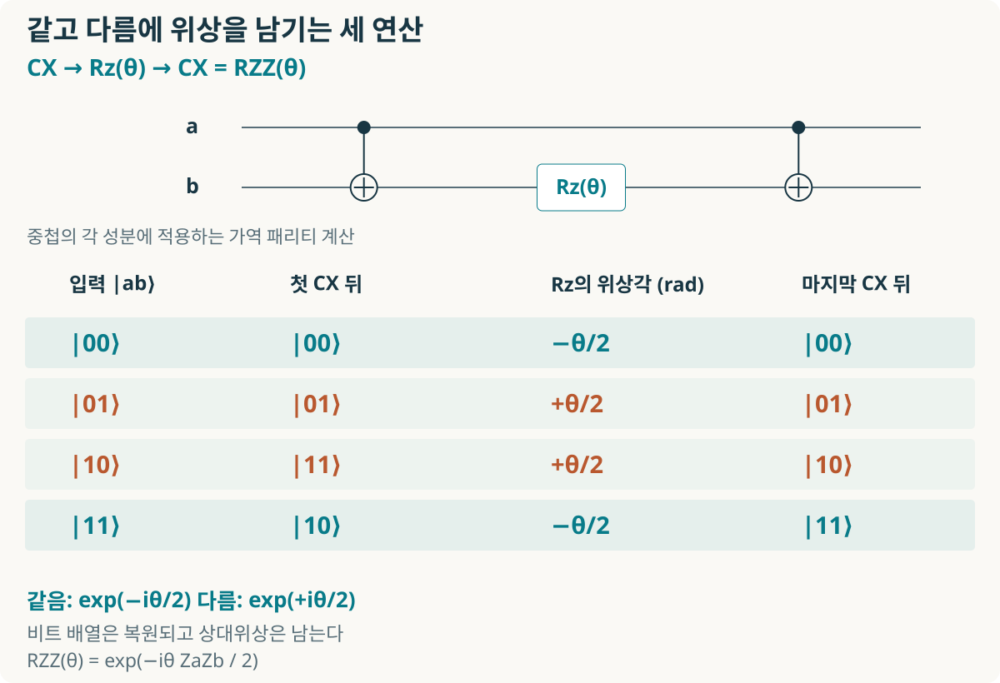
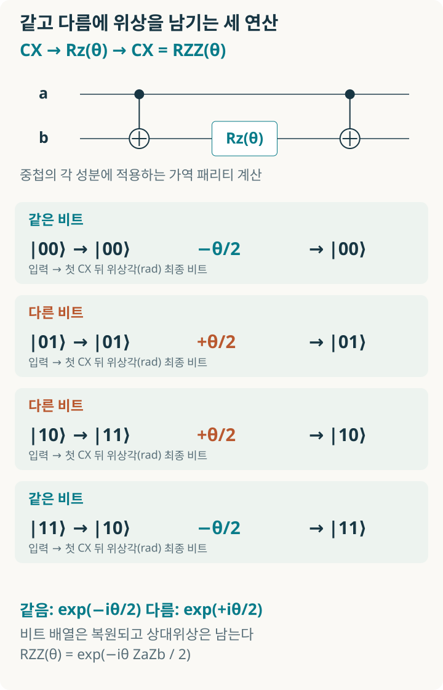
이 연산은 중첩의 두 큐비트를 얽히게 할 수 있다.
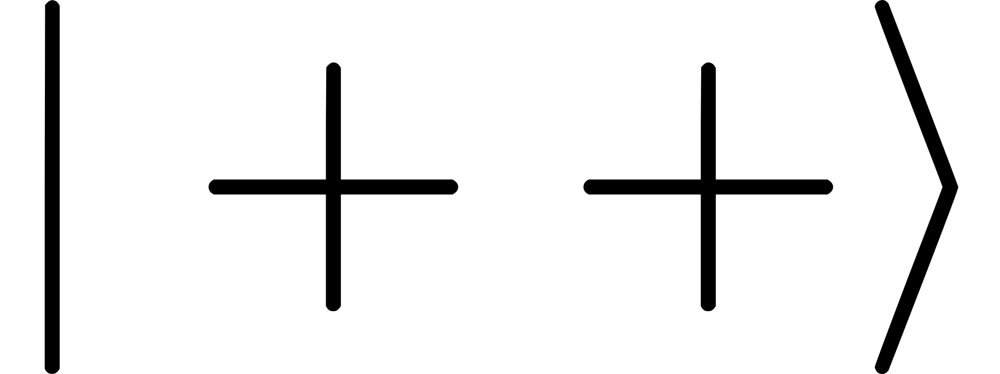
에 적용하면 네 진폭의 크기는 모두 1/2이지만, 같은 비트 쌍과 다른 비트 쌍 사이에 상대위상이 생긴다.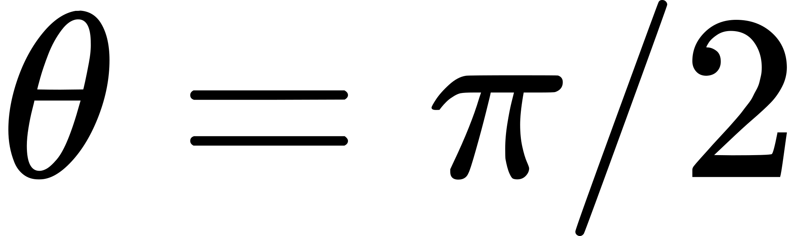
에서는 두 큐비트가 최대 얽힘 상태가 된다. 반면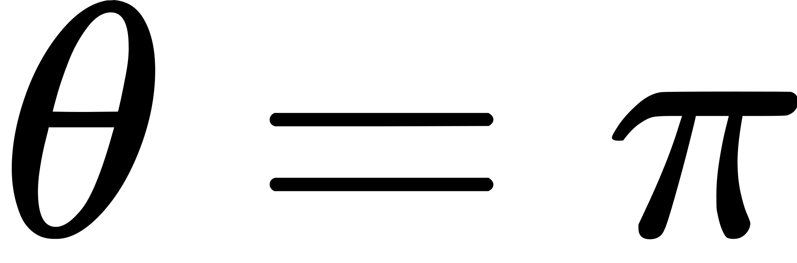
에서는 이므로 두 개의 국소 Z 작용으로 분리된다. 위상 패턴과 입력 상태가 함께 얽힘을 결정한다.에너지 차이는 왜 회전으로 표현되는가
두 스핀이 Ising 형태로 결합한 계를 생각하자. 여기서는 Pauli 연산자의 고유값을 ±1로 두고, 결합을
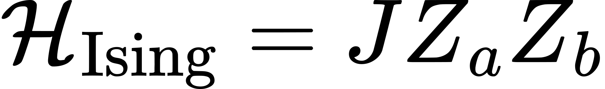
로 정의한다.  는 에너지 단위의 결합상수다.
는 에너지 단위의 결합상수다.
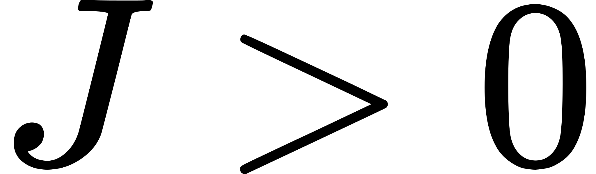
이면 서로 같은 Z 값을 가진00·11의 에너지가 +J, 서로 다른 01·10의 에너지가 −J다. 반대 배치가 더 낮은 에너지인 반강자성 결합이다.
양자역학에서 에너지가 E인 성분은 시간 t 동안  의 위상을 얻는다. 두 스핀의 네 성분은 에너지에 따라 서로 다른 방향으로 위상을 쌓는다. 이 시간발전을 앞에서 구한 게이트와 비교하면
의 위상을 얻는다. 두 스핀의 네 성분은 에너지에 따라 서로 다른 방향으로 위상을 쌓는다. 이 시간발전을 앞에서 구한 게이트와 비교하면

여기서 회전각
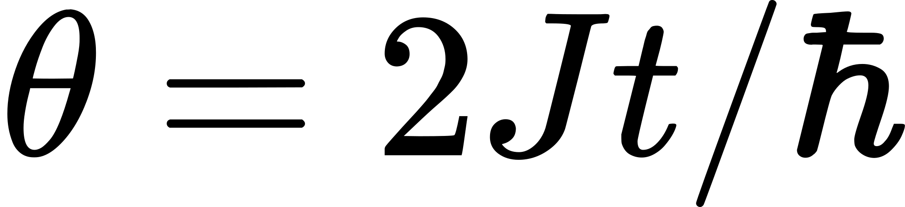
는 무차원이다. 식의 2는 Pauli 연산자와 를 사용한 규약에서 나온다. 물리적 스핀 연산자
를 사용한 규약에서 나온다. 물리적 스핀 연산자 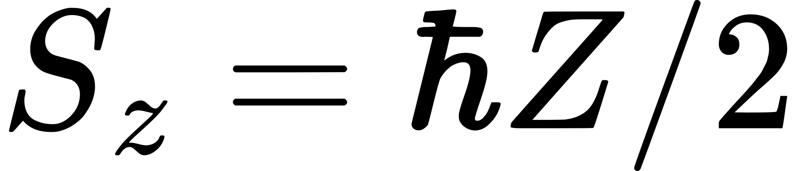
로 해밀토니안을 쓰면 결합상수의 정의에도 그 인자가 반영된다.회전각이 결합의 세기와 작용한 시간을 담는다. 이것이 회로를 물리계의 시간발전으로 읽을 수 있는 이유다. 모사하려는 시간 t가 정해지면 필요한 각도가 정해지고, 장치는 지원하는 기본 게이트로 그 변환을 구현한다. CNOT 두 개를 쓰는 분해는 그 구현 중 하나다. 장치의 실제 구동 시간과 모사하는 계의 시간 t는 각각의 해밀토니안과 제어 방법에 따라 연결된다.
여기에 횡방향 항
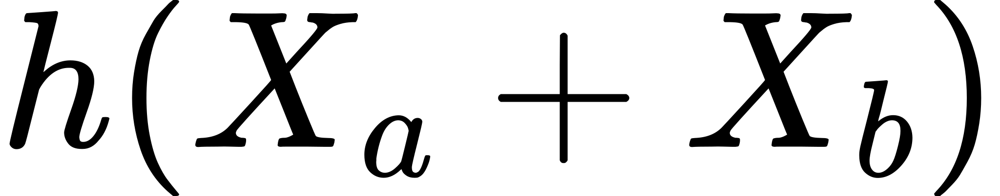
가 있으면 X축 회전도 필요하다. ZZ 항은 두 스핀의 같고 다름을 구별하고, X 항은 Z 상태들을 서로 섞는다. 이 둘은 일반적으로 교환하지 않으므로 적용 순서가 결과에 영향을 준다. 여러 항의 시간발전을 짧은 단계로 조합하는 문제는 관측량에 맞춘 양자 동역학 리뷰에서 더 이어진다.풀려는 문제를 회로에 넣는다
이제 두 점을 선 하나로 연결하자. 두 점에 각각 0이나 1을 적고, 서로 다르게 적으면 1점, 같으면 0점을 얻는다. 그래프를 두 집단으로 나누어 집단 사이를 가로지르는 선의 수를 최대화하는 MaxCut의 가장 작은 예제다. 좋은 답은 01·10이다.
우리는 답을 이미 안다. 이 크기의 문제를 사용하는 이유는 문제의 조건이 어떤 식을 거쳐 게이트가 되는지, 중간 상태를 모두 살펴볼 수 있기 때문이다. 두 고전 비트의 점수는 다음과 같다.

비트가 0이면 Z 고유값이 +1, 비트가 1이면 −1이므로 를  , 를
, 를
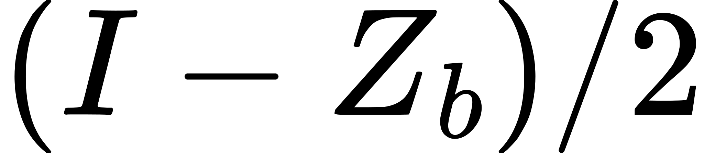
로 바꾼다. 대입해 정리하면 점수 연산자가 나온다. [4]
이 식을 네 비트열에 작용시키면 점수가 그대로 고유값으로 나온다. 00·11에는 0, 01·10에는 1이다. 점수의 최대화를 에너지 최소화 문제로 쓰고 싶다면  로 정의할 수 있다. 여기서는 양자 근사 최적화 알고리즘(quantum approximate optimization algorithm, QAOA) 원전의 점수 C를 최대화하는 규약을 유지한다. [4]
로 정의할 수 있다. 여기서는 양자 근사 최적화 알고리즘(quantum approximate optimization algorithm, QAOA) 원전의 점수 C를 최대화하는 규약을 유지한다. [4]
출발 상태는
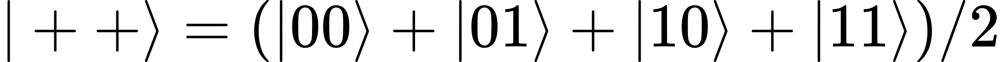
다. 네 후보의 확률이 각각 1/4이므로 1점을 얻을 확률은 1/2이다. 먼저 점수에 따른 위상 연산 를 적용한다.
를 적용한다.  는 무차원 매개변수다. 0점인 성분은 그대로이고 1점인 성분에는
는 무차원 매개변수다. 0점인 성분은 그대로이고 1점인 성분에는  가 곱해진다.
가 곱해진다.

문제의 조건이 네 진폭의 상대위상에 기록되었다. 구현할 게이트도 바로 읽힌다.
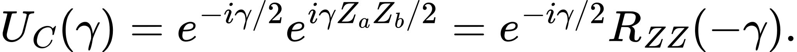
전체에 공통인
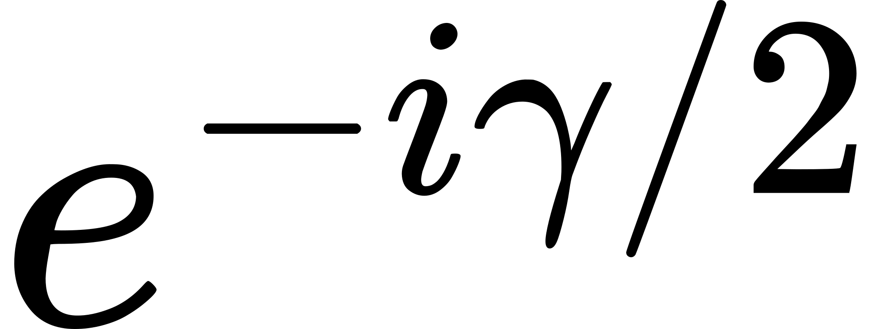
을 제외하면, b에 각도 −γ의 Rz를 적용하는 CNOT–Rz–CNOT 회로다. 링크에서 출발한 짧은 회로가 우리가 고른 문제의 점수 항에 대응한다.이때 확률은 여전히 네 개 모두 1/4이다. 1점의 확률도 1/2이다. 점수를 위상으로 쓰는 일 다음에는 그 위상이 결과에 영향을 주도록 성분을 섞는 단계가 온다.
위상차를 답의 확률로 바꾼다
QAOA의 이 예제에서는 각 큐비트에 X축 회전을 적용한다. 혼합 연산자  와 매개변수
와 매개변수  를 사용하면 [4,5]
를 사용하면 [4,5]

X축 회전은 각 성분을 Z 기저의 다른 성분과 만나게 한다.  이므로, 두 큐비트의 최종 비트열 하나에는 처음의 여러 비트열에서 온 진폭들이 합쳐진다. 그들이 문제 위상층에서 어떤 위상을 얻었는지가 합의 크기를 바꾼다.
이므로, 두 큐비트의 최종 비트열 하나에는 처음의 여러 비트열에서 온 진폭들이 합쳐진다. 그들이 문제 위상층에서 어떤 위상을 얻었는지가 합의 크기를 바꾼다.
작은 예제를 끝까지 계산하면, 두 층을 거친 뒤 좋은 답의 확률은 다음과 같다.

이 식의 두 매개변수는 어떤 위상차를 쓸지, 그 성분들을 얼마나 섞을지 정한다.
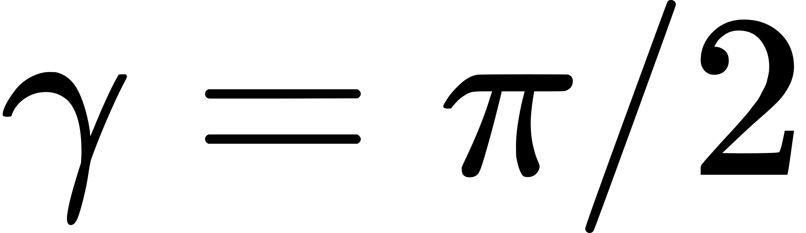
,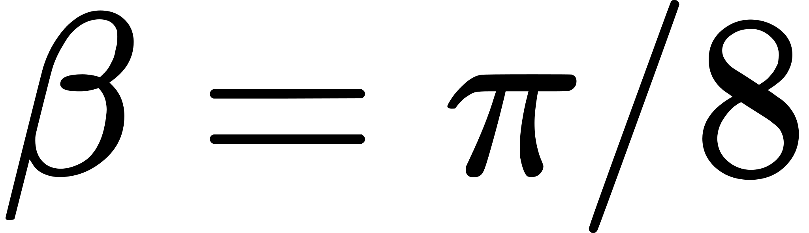
을 고르면 사인 항의 곱이 1이다. 최종 상태는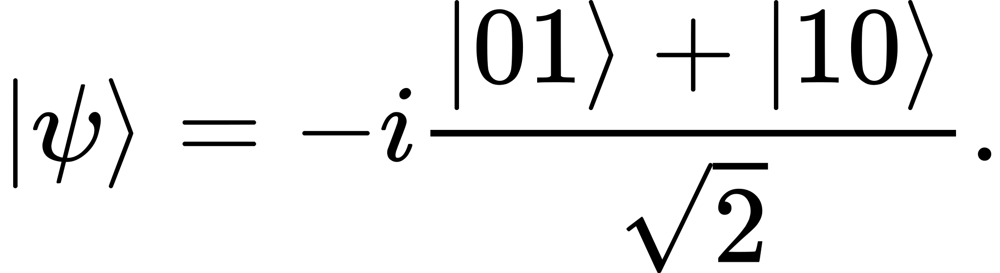
상쇄가 생기는 한 자리를 직접 보자. γ=π/2인 문제 위상층 뒤에
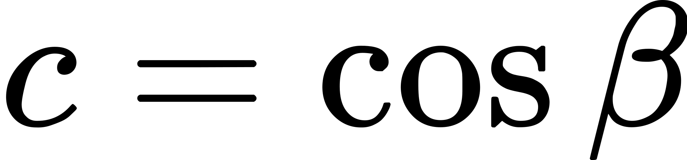
, 로 쓰면, 최종
로 쓰면, 최종 00에는 처음 00·11에서 온 합 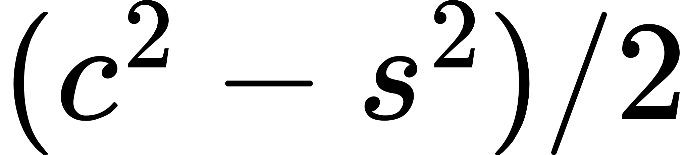
와 처음01·10에서 온 합 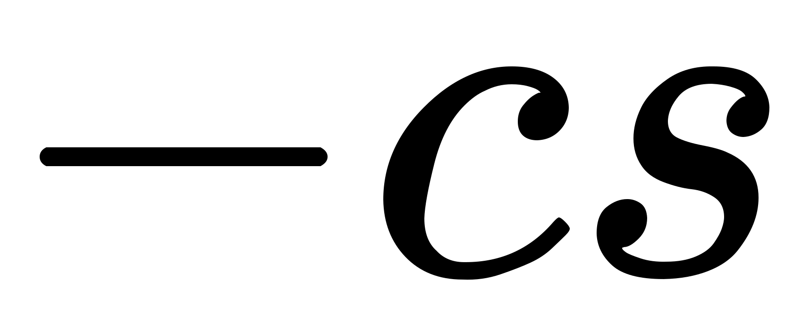
가 만난다. 따라서 진폭은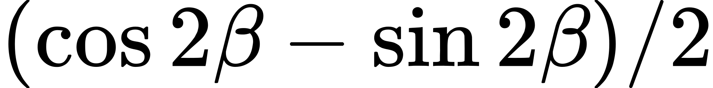
다. β=π/8에서는 두 항의 크기가 같아 정확히 상쇄된다. 문제 위상층에서 생긴 −i와 X축 회전의 −i가 만나 음의 부호를 만든 것이 이 상쇄에 쓰였다.이상적 상태벡터 계산에서 00·11로 향하는 진폭은 상쇄되고, 01·10에는 각각 확률 1/2이 남는다. 합계 1이므로 측정하면 두 좋은 답 중 하나를 얻는다. 출발할 때 50%였던 성공 확률이, 문제 위상층 직후에는 50%로 유지되다가 혼합층 뒤 100%가 되었다.
그림 3의 위상 화살표와 확률 막대를 함께 보자. 위상을 기록한 가운데 장면과 답의 빈도가 달라진 마지막 장면을 구별하면 두 층이 각각 왜 필요한지 읽을 수 있다. 위상층과 혼합층의 순서를 바꾼 경우에는 이 초기 상태에서 좋은 답의 확률이 1/2로 남는다. 가 B의 고유상태여서, 먼저 적용한 혼합층이 상태 전체에 같은 위상만 주기 때문이다.
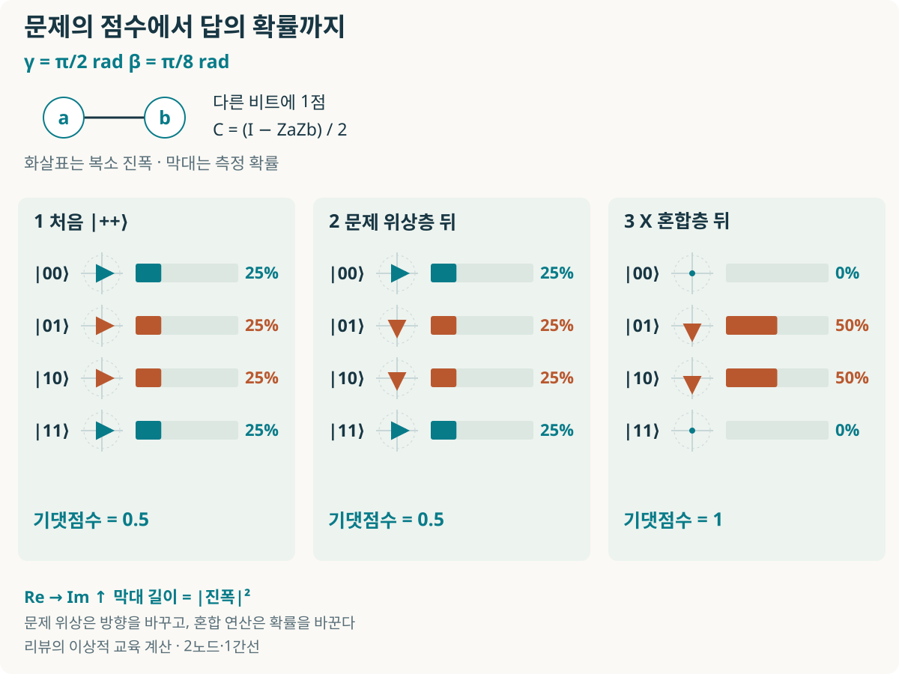
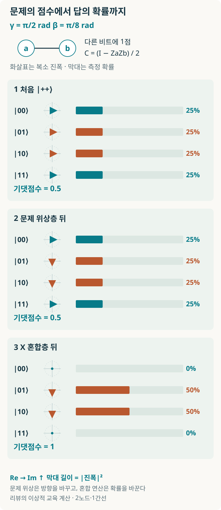
계산 도구에서는 먼저 두 점 예제를 고르고 γ와 β를 바꿔 보자. 단계를 ‘문제 위상층 뒤’에 놓으면 화살표는 움직여도 확률은 그대로다. ‘X 혼합층 뒤’로 옮기면 같은 각도 변화가 확률 막대에 나타난다. γ=0 또는 β=0도 비교할 수 있다. 원래 예제로 돌아오는 버튼은 위에서 계산한 각도를 복원한다.
큰 문제에서는 이런 좋은 각도를 어떻게 찾을까. 한 번의 측정은 비트열 하나를 준다. 같은 회로를 여러 번 준비하고 측정해 점수의 평균을 추정하고, 고전 최적화기가 그 값을 이용해 각도를 갱신한다. QAOA는 이 과정을 문제 위상층과 혼합층을 번갈아 쌓은 회로에서 반복한다. 위의 작은 예제에서는 해석식으로 좋은 각도를 골랐고, 더 큰 그래프에서는 그 탐색 자체가 알고리즘의 중요한 비용이 된다. [4]
결합을 하나 더하면 각도도 다시 고른다
계산 도구에서 삼각형을 고르면 세 비트가 세 간선으로 연결된다. 점수는 각 간선의 점수를 합한
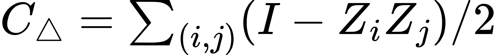
다. 이제 두 스핀을 서로 반대로 놓으면 남은 스핀은 두 이웃을 모두 만족시킬 수 없다. 반강자성 삼각형에서 익숙한 좌절(frustration)이다. 가능한 최대 점수는 2이고,000·111을 제외한 여섯 비트열이 그 값을 얻는다.
같은 RZZ 부품을 간선마다 적용하면 문제 위상층을 만들 수 있다. 각도는 이 결합 구조에 맞춰 다시 고른다.
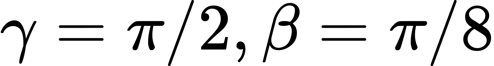
을 그대로 사용하면, 이상적 계산의 평균 점수가 초기 1.5에서 0.75로 내려간다. 삼각형에 맞춘
를 사용하면 같은 한 층으로 평균 점수 2에 도달한다. 최적해 여섯 개의 확률이 각각 1/6이 된다. 계산 도구의 두 예제 각도를 비교하면 결합 구조가 바뀔 때 회로의 위상과 간섭도 다시 설계해야 함을 볼 수 있다.
여러 간선의 ZZ 항들은 서로 교환하므로 이 예제의 문제 위상층은 간선별 RZZ의 곱으로 정확히 분해된다. 동시에 같은 큐비트를 사용하는 두 게이트를 실행할 수 있는지는 장치의 제어 조건에 달려 있다. 문제의 그래프와 장치의 연결 구조가 다르면 큐비트를 옮기는 추가 연산도 생길 수 있다. 수학적 분해와 실제 회로의 깊이를 함께 살펴야 하는 이유다.
회로를 설계하는 연구자가 읽어야 할 것
같은 회전 게이트도 알고리즘의 목적에 따라 각도를 정하는 방식이 달라진다. 해밀토니안 시뮬레이션에서는 주어진 결합상수와 모사할 시간에 맞춘다. QAOA에서는 점수의 평균을 높이도록 찾는다. 변분 양자 고유값 알고리즘(variational quantum eigensolver, VQE)에서는 회로로 준비한 상태  의 에너지
의 에너지
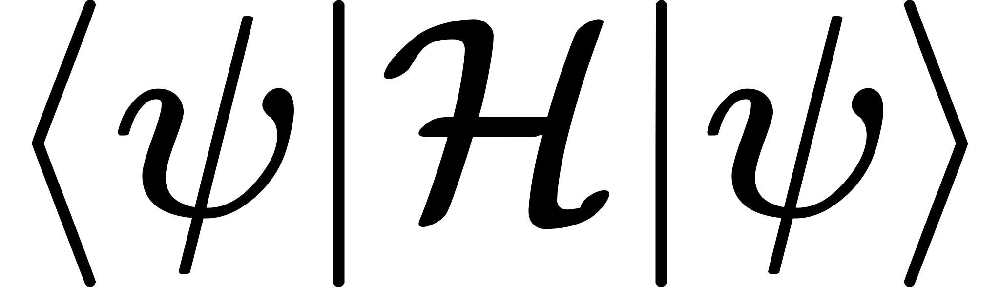
를 낮추도록 찾는다. VQE의 변분 원리는 정규화한 후보 상태의 에너지를 바닥상태 에너지의 상한으로 삼는다. [6]이때 회로가 만들 수 있는 상태들의 집합을 안자츠(ansatz), 곧 탐색할 상태의 가정으로 읽을 수 있다. Rz와 Rx를 어느 위치에 놓을지, 어떤 큐비트를 연결할지에 따라 탐색 가능한 상태가 달라진다. 물리계가 보존하는 입자 수나 대칭을 회로에서도 유지하면 탐색할 공간을 줄일 수 있다. 반대로 관심 있는 상관을 만들 연산이 빠지면 최적화가 잘 돌아도 원하는 상태에 도달하기 어렵다. 계산 응집물리에서 파동함수의 형태와 변분 자유도를 고르는 판단이 회로 설계로 이어진다.
단일 큐비트의 임의 연산과 CNOT을 조합하면 여러 큐비트의 임의 유니터리 변환을 구성할 수 있다는 보편성 정리가 있다. [7] 여기서부터 실제 알고리즘을 만들 때에는 문제의 구조를 이용해 필요한 변환을 적은 자원으로 구현하는 설계가 중요해진다. 허용한 오류와 회로 깊이, 각도 탐색 횟수와 측정 샷 수를 정하고, 같은 목표 정확도의 고전 계산과 시간·비용을 비교해야 한다. 작은 두 큐비트 계산에서는 모든 진폭을 직접 계산했으며, 큰 문제의 성능 평가는 해당 규모와 비교 방법을 정해 수행한다.
회로를 검증할 때에는 각도를 바꾸기 전에 몇 가지 계산을 해 볼 수 있다. 문제의 고전 점수와 점수 연산자의 고유값을 작은 입력에서 대조한다. 각 층의 중간 상태를 구해 위상과 확률이 어디서 달라지는지 본다. 파라미터를 0으로 놓고, 연산 순서를 바꾸며, 보존하려는 대칭이 유지되는지 확인한다. 두 큐비트의 Z 측정 분포는 결맞음이 사라진 혼합 상태와 같을 수도 있으므로, 얽힘을 확인하려면 다른 기저의 상관이나 적절한 증인도 측정해야 한다. 상태벡터를 아는 교육 계산에서는 분해 가능성을 직접 확인할 수 있다.
AI가 제안하거나 자동으로 생성한 회로도 이 질문들로 읽을 수 있다. 어떤 항을 구현했는지, 어느 대칭을 보존했는지, 측정한 값이 원래 문제의 무엇을 뜻하는지 확인한다. 회로 자동 설계 리뷰에서 다룬 후보 생성과 검증의 연결도 여기에 있다. 회로의 짧은 코드를 해석하는 데에는 문제와 상태, 관측량을 함께 보는 전문성이 쓰인다.
처음의 CNOT–Rz–CNOT으로 돌아오면 작은 상자들이 다르게 보인다. 첫 CNOT은 두 값의 관계를 표적에 담고, 회전은 그 관계에 위상을 주며, 마지막 CNOT은 원래 비트 배열을 복원한다. 문제에 맞춘 후속 연산이 그 위상을 간섭에 사용하면 답의 확률이 달라진다. 어떤 차이를 위상으로 기록하고, 그 차이를 어떤 관측량에서 읽어낼지 정하는 일이 양자 회로 설계의 한 구체적인 출발점이다.
수치·재현 자료: 이 글의 확률과 중간 상태는 NumPy 2.0.2를 사용한 이상적 상태벡터 교육 계산이다. [8] 검산 코드와 계산 기록을 제공한다. 그림은 동일한 게이트 규약으로 재구성했으며 계산 도구는 브라우저에서 상태를 직접 갱신한다. 단일 큐비트의 기초는 양자 머신러닝 렉처 노트와 함께 읽을 수 있다.
참고문헌
- [1]
D. Buchta, A small identity in quantum computing can tell a surprisingly big story, LinkedIn (4 November 2026) (accessed 5 November 2026).
- [2]
IBM Quantum, RZGate (accessed 5 November 2026).
- [3]
IBM Quantum, RZZGate (accessed 5 November 2026).
- [4]
E. Farhi, J. Goldstone, and S. Gutmann, A quantum approximate optimization algorithm, arXiv:1411.4028v1 (2014).
- [5]
IBM Quantum, RXGate (accessed 5 November 2026).
- [6]
A. Peruzzo, J. McClean, P. Shadbolt, M.-H. Yung, X.-Q. Zhou, P. J. Love, A. Aspuru-Guzik, and J. L. O’Brien, A variational eigenvalue solver on a photonic quantum processor, Nat. Commun. 5, 4213 (2014).
- [7]
A. Barenco, C. H. Bennett, R. Cleve, D. P. DiVincenzo, N. Margolus, P. Shor, T. Sleator, J. A. Smolin, and H. Weinfurter, Elementary gates for quantum computation, Phys. Rev. A 52, 3457 (1995).
- [8]
C. R. Harris et al., Array programming with NumPy, Nature 585, 357 (2020).